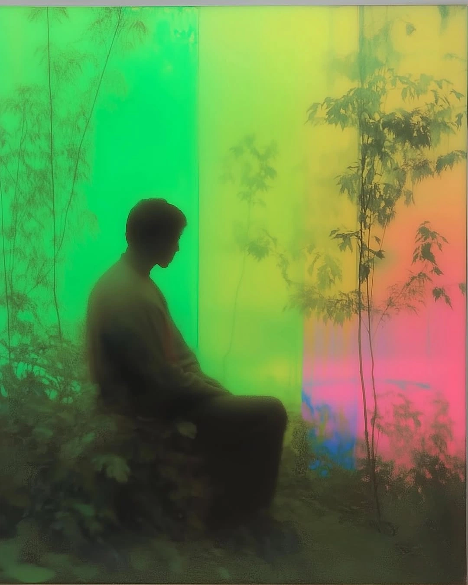

Um pouco sobre mim
Prazer, meu nome é Lucas Evangelista.
Trabalho há mais de 3 anos com marketing e estratégia de conteúdo para redes sociais. Sou formado em Marketing pela Universidade UNIPIAGET e atualmente sou responsável pelo marketing de empresas como a Ambiental Pro e a QuironMed Soluções Hospitalares.
Durante esse período, tive a oportunidade de explorar diversas áreas do marketing e conhecer melhor
minhas habilidades. Hoje, gostaria de compartilhar um pouco sobre alguns dos projetos dos quais
fiz parte.
Todos esses trabalhos são autorais e surgiram a partir das comunicações da marca,
como uma forma de transmitir de maneira clara a verdadeira intenção da marca e sua conexão com o
público.